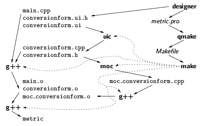
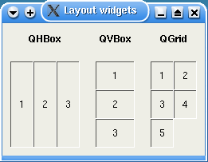

Vytvoøit nový typ widgetu je v toolkitu Qt velice jednoduché. Jako základ vybereme tøídu, která má vlastnosti co nejbli¾¹í tomu, èeho chceme dosáhnout. Jako pøíklad si uká¾eme widget LCDRange z tutoriálu Qt (v dokumentaci Qt je to Tutorial #1, kap. 7). Program se skládá ze tøí souborù: lcdrange.h (definice tøídy LCDRange), lcdrange.cpp (implementace metod tøídy LCDRange) a main.cpp (hlavní program pou¾ívající tøídu LCDRange). Widget LCDRange se skládá ze zobrazení èísla ve stylu LCD displeje (QLCDNumber) a z ¹oupátka QSlider, kterým se nastavuje zobrazená hodnota, viz obr. 1.
Obr. 1: Widget LCDRange
Ná¹ nový widget obsahuje své dvì komponenty pod sebou, proto bude odvozen z vertikálního boxu QVBox (funguje podobnì jako GtkVBox). Na zaèátku souboru lcdrange.h musíme naèíst pøíslu¹ný hlavièkový soubor. Ve tøídì LCDRange nebudeme potøebovat pøímo objekt QSlider, ale pouze ukazatel na nìj. Proto staèí pouze deklarovat jméno tøídy. Tím, ¾e se neincluduje hlavièkový soubor qslider.h, u¹etøíme èas pøi pøekladu.
#include <qvbox.h> class QSlider;Aby Qt správnì rozpoznalo ná¹ widget jako nový typ, musíme na zaèátku tìla tøídy pou¾ít makro Q_OBJECT. Tím se deklarují pomocné metody pro typový systém Qt a zároveò se øekne, ¾e tento zdrojový soubor se bude zpracovávat pomocí utility moc.
class LCDRange : public QVBox {
Q_OBJECT
Následnì deklarujeme jednotlivé metody a datové polo¾ky tøídy, vèetnì signálù
a slotù. Sloty mù¾eme deklarovat jako public, protected nebo
private, signály jsou v¾dy protected. Makro slots
expanduje na prázdný øetìzec, makro signals má hodnotu
protected. Tato makra informují program moc, ¾e má urèité
metody o¹etøit speciálním zpùsobem, a zároveò zajistí, ¾e pøi pøekladu
dostaneme po prùchodu preprocesorem korektní zdrojový text v C++.
public:
LCDRange(QWidget *parent = 0, const char *name = 0);
int value() const;
public slots:
void setValue(int);
signals:
void valueChanged(int);
private:
QSlider *slider;
};
V souboru lcdrange.cpp definujeme jednotlivé metody. Konstruktor vytvoøí dva synovské widgety – LCD èíslo a slider. Spojením signálu valueChanged slideru se slotem display LCD èísla zajistíme zmìnu zobrazené hodnoty pøi posunu slideru. Druhé volání connect nastaví, ¾e signál QSlider::valueChanged zpùsobí vygenerování signálu LCDRange::valueChanged. U¾ivatel na¹eho widgetu LCDRange má mo¾nost dozvìdìt se prostøednictvím tohoto signálu o zmìnì hodnoty. Nemusí pøitom vùbec vìdìt, ¾e widget má ve skuteènosti dva synovské widgety a signál pochází od jednoho z nich.
#include "lcdrange.h"
#include <qslider.h>
#include <qlcdnumber.h>
LCDRange::LCDRange(QWidget *parent, const char *name) : QVBox(parent, name)
{
QLCDNumber *lcd = new QLCDNumber(2, this, "lcd");
slider = new QSlider(Horizontal, this, "slider");
slider->setRange(0, 99);
slider->setValue(0);
connect(slider, SIGNAL(valueChanged(int)), lcd, SLOT(display(int)));
connect(slider, SIGNAL(valueChanged(int)), SIGNAL(valueChanged(int)));
}
Dál u¾ zbývá pouze implementovat metodu value a slot
setValue. Tìlo signálu valueChanged nedefinujeme. O správnou
definici, která bude volat pøipojené handlery, se postará program
moc.
int LCDRange::value() const
{
return slider->value();
}
void LCDRange::setValue(int value)
{
slider->setValue(value);
}
Ka¾dý hlavièkový soubor, jen¾ obsahuje definici tøídy odvozené z QObject, je nutné zpracovat pomocí nástroje Meta Object Compiler (moc). Aby moc tøídu zpracoval, musí v ní být pou¾ito makro Q_OBJECT. Dále mù¾e obsahovat deklarace signálù, slotù a properties (hodnot pøístupných pomocí øetìzcového klíèe). Meta Object Compiler vygeneruje pro ka¾dou tøídu XYZ soubor moc_XYZ.cpp. V nìm jsou definice metod implementujících signály a také definice meta-objektu. Ka¾dá tøída má svùj meta-objekt typu QMetaObject, pøístupný prostøednictvím virtuální metody QObject::metaObject. Meta-objekt popisuje vlastnosti tøídy: jméno tøídy, jméno a odkaz na meta-objekt bázové tøídy, dále seznamy jmen a typù slotù, signálù a properties. Informace z meta-objektu pou¾ívá napø. Qt Designer nebo skriptovací engine QSA.
Obr. 2 ukazuje, jak probíhá pøeklad programu, od zdrojových textù a¾ k výslednému spustitelnému souboru. Pøíklad vychází ze stejného ukázkového programu, na jakém jsme si ukázali definici nové tøídy v první èásti èlánku.
Obr. 2: Postup pøekladu programu
Na zaèátku máme v adresáøi pouze soubory se zdrojovými texty (main.cc, lcdrange.h, lcdrange.cc). Pøíkaz
qmake -projectpro nì vytvoøí projektový soubor a dal¹í spu¹tìní qmake vygeneruje Makefile obsahující pravidla pro volání kompilátoru, linkeru a Meta Object Compileru. Pøíkaz make nejprve z hlavièkového souboru lcdrange.h vytvoøí moc_lcdrange.cpp pomocí utility moc. Pak u¾ se spustí kompilátor a linker.
Alternativnì mù¾eme pou¾ít nástroj Qt Designer pro grafický návrh aplikace. Designer vytváøí pro ka¾dý formuláø (tj. top-level okno) popis vzhledu okna obsahující rozlo¾ení a vlastnosti widgetù. Definici formuláøe ukládá do souboru OKNO.ui ve formátu XML. Pøímo v designeru lze definovat i chování widgetù tím, ¾e Qt Designer definuje pro ka¾dé okno samostatnou tøídu a programátor doplní tìla jednotlivých slotù. Designer pak definice slotù exportuje do souboru OKNO.ui.h. Vygenerovat se dá i standardní soubor main.cc s funkcí main, která zobrazí hlavní okno a spustí zpracování událostí. Qt Designer vygeneruje také projektový soubor pro qmake, v nìm¾ je øeèeno, ¾e v Makefile má být volání utility uic (User Interface Compiler). Ta z XML souboru OKNO.ui vytvoøí soubory OKNO.h a OKNO.cpp. Dal¹í postup je stejný jako bez pou¾ití designeru. Na obr. 3 je pøíklad zalo¾ený na ukázkovém programu z tutoriálu pro Qt Designer.

Obr. 3: Pøeklad aplikace vytvoøené v Qt Designeru
Podobnì jako v GTK+, i v Qt se pozice a velikosti widgetù nastavují automaticky. Ka¾dý widget má doporuèenou velikost, kterou vrací metoda QWidget::sizeHint. Navíc má je¹tì metodu QWidget::minimumSizeHint urèující minimální velikost widgetu. Metoda QWidget::sizePolicy definuje, zda má widget v¾dy velikost sizeHint, nebo se mù¾e zvìt¹ovat èi zmen¹ovat. Pøidìlování velikosti probíhá podobnì jako v GTK+. Nejprve se prùchodem stromu widgetù zjistí po¾adavky jednotlivých widgetù na velikost. U widgetu, jen¾ má potomky, závisí jeho velikost na jeho vlastních potøebách a na po¾adavcích potomkù. Následnì dostane top-level okno ve spolupráci s window managerem pøidìlené místo, které se pak rozdìluje mezi potomky ve stromì widgetù.
Nejjednodu¹¹í zpùsob, jak do rodièovského widgetu rozmístit synovské widgety, je pou¾ití nìkterého layout widgetu. Vybírat lze ze tøí typù: QHBox (synovské widgety seøazené v øádku zleva doprava), QVBox (synovské widgety seøazené ve sloupci shora dolù) a QGrid (synovské widgety ve dvojrozmìrné møí¾ce). Layout widgety fungují podobnì jako v GTK+ kontejnery GtkHBox, GtkVBox a GtkTable. V konstruktoru QGrid se zadává poèet sloupcù. Jednotlivé synovské widgety se vkládají vedle sebe, po zaplnìní nastaveného poètu sloupcù se pokraèuje v dal¹ím øádku. V¹echny tøi typy layout widgetù jsou odvozené z QFrame, tak¾e umí kolem vlo¾ených widgetù kreslit rámeèek. Kdy¾ potøebujeme nadefinovat slo¾itìj¹í rozlo¾ení widgetù, dají se layout widgety vnoøovat. Na obr. 4 jsou v¹echny tøi typy layout widgetù. Pøíslu¹ný zdrojový kód je layout_widgets.cpp.

Obr. 4: Layout widgety QHBox, QVBox a QGrid
Pokud potøebujeme vìt¹í kontrolu nad rozmístìním widgetù, mù¾eme pou¾ít nìkterý z potomkù z tøídy QLayout. K dispozici jsou QBoxLayout, QHBoxLayout, QVBoxLayout a QGridLayout. Tyto layouty v¹ak nejsou widgety. Jsou to objekty, které se vlo¾í do widgetu a øídí rozmístìní jeho synovských widgetù. V rámci jednoho widgetu je mo¾né layouty vnoøovat. Pokud chceme do layoutu vlo¾it widget, je tøeba ho vytvoøit tak, ¾e za rodièe bude mít widget, který je vlastníkem layoutu. Následnì widget vlo¾íme do layoutu metodou add nebo addWidget.
QHBoxLayout *box = new QHBoxLayout(parent);
box->addWidget(new QLabel("1", parent));
box->addWidget(new QLabel("2", parent));
Alternativnì mù¾eme nastavit voláním QLayout::setAutoAdd, ¾e v¹ichni
noví synové widgetu budou automaticky vlo¾eni do layoutu. Tato metoda v¹ak
funguje pouze pro top-level layout, tj. layout, jeho¾ rodièem je widget a
nikoliv jiný layout.
QHBoxLayout *box = new QHBoxLayout(widget);
box->setAutoAdd(TRUE);
new QLabel("1", widget);
new QLabel("2", widget);
Stejného vzhledu jako na obr. 4 lze s pou¾itím vnoøených layoutù místo layout
widgetù dosáhnout programem layouts.cpp.
Widget dostane událost QPaintEvent, jestli¾e je potøeba ho celý nebo èást pøekreslit. Vlastní kreslení provádí handler QWidget::paintEvent. Metoda QPaintEvent::region slou¾í ke zji¹tìní oblasti, která se má kreslit. Zevnitø programu lze kreslení iniciovat voláním QWidget::repaint nebo QWidget::update. Rozdíl mezi nimi je v tom, ¾e repaint provede pøekreslení okam¾itì pøímým zavoláním paintEvent, kde¾to update pouze vygeneruje událost QPaintEvent a vlo¾í ji do fronty. Kreslení 2D grafiky se provádí pomocí tøídy QPainter. Pro 3D grafiku je mo¾né pou¾ít knihovnu OpenGL, pøístupnou prostøednictvím widgetu QGLWidget.
Tøída QPainter kreslí do QPaintDevice, resp. do nìkterého potomka této tøídy. Nejèastìji pou¾ívaný je widget (QWidget). Dal¹í mo¾nosti jsou: pixmapa (QPixmap, rastrový obrázek), tiskárna (QPrinter) a záznamník kreslících pøíkazù (QPicture). Objekt tøídy QPicture si doká¾e zapamatovat posloupnost kreslicích operací a následnì tyto operace zopakovat na nìjakém objektu QPainter. Pøípadnì lze celou posloupnost ulo¾it do souboru v proprietárním formátu nebo ve formátu SVG.
Ve tøídì QPainter jsou definovány funkce pro kreslení geometrických tvarù (èar, polygonù, kruhù, obloukù a Beziérových køivek), psaní textu a kreslení obrázkù (kopírování dat z QPixmap, QImage nebo QPicture). Souøadnice se implicitnì mìøí z levého horního rohu v pixelech doprava a dolù, ale soustavu souøadnic lze transformovat pomocí operací posunu, rotace, zmìny mìøítka a zkosení. Je také mo¾né pøímo nastavit transformaèní matici ve tvaru . Matice transformuje ka¾dý zadaný bod (x, y) na (m11x+m21y+dx, m12x+m22y+dy). Ka¾dý objekt, který se má nakreslit, je nejdøív transformován do souøadnic modelu pomocí transformaèní matice, následnì se provede oøíznutí do obdélníku QPainter::window a výsledek se umístí na QPaintDevice tak, ¾e window (v souøadnicích modelu) se ztoto¾ní s obdélníkem QPainter::viewport (v souøadnicích zaøízení). QPainter obsahuje také parametry kreslení, jako je barva a tlou¹»ka èar, barva a vzorek pro vyplòování, nebo font.
Typická metoda paintEvent vypadá tak, ¾e na zaèátku se vytvoøí painter, nastaví se parametry, provedou se kreslicí operace a na konci se painter automaticky zru¹í. Následující pøíklad, opìt pøevzatý z tutoriálu Qt, nakreslí to, co je ve ¾lutém obdélníku na obr. 5.
void CannonField::paintEvent(QPaintEvent *)
{
QPainter p(this);
p.setBrush(blue);
p.setPen(NoPen);
p.translate(0, rect().bottom());
p.drawPie(QRect(-35, -35, 70, 70), 0, 90 * 16);
p.rotate(-ang);
p.drawRect(QRect(33, -4, 15, 8));
}
Obr. 5: Pøíklad kreslení